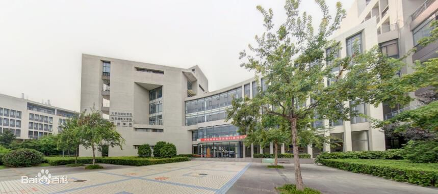

专业设置
- 电气工程与自动化
- 电子科学与技术
- 电子信息工程
- 信息工程
- 
学院简介
中国矿业大学信息与控制工程学院是中国矿业大学主要工科学院之一。学院前身是1950年创建的矿山电机工程系，1953年更名为矿山机电系，1981年更名为自动化工程系，1995年建立信息与电气工程学院，2016年电气工程学科调整至其他学院，原学院整合物联网（感知矿山）研究中心更名为信息与控制工程学院。
学院目前有电子信息工程专业和自动化2个本科专业。2015年学院整合原信息工程和电子科学与技术2个本科专业成立电子信息工程专业，原信息工程专业为国家级特色专业，原电子信息类专业为江苏省“十二五”重点专业类。学科涵盖信息与通信工程、控制科学与工程和电子科学与技术3个一级学科，现有信息与通信工程、控制科学与工程一级学科博士点，信息与通信工程、控制科学与工程、电子科学与技术3个一级学科硕士点，控制工程、电子与通信工程2个工程专业硕士点，设有控制科学与工程、信息与通信工程2个博士后科研流动站。学院目前拥有2个国家级教学科研平台：电工电子国家级实验教学示范中心、矿山互联网应用技术国家地方联合工程实验室，1个江苏省十三五重点学科：信息与通信工程，1个国家级教学团队：电气信息类基础教学团队。
教授简介
- 程德强 博士生导师 研究方向：机器视觉与模式识别、图像智能检测与信息处理
- 程玉虎 教授 控制科学与工程学科博士生导师 研究方向：机器学习、深度学习、图像处理。
- 陈兴 控制科学与工程学科博士生导师 现为中国矿业大学生物信息研究所所长 研究方向:研究方向为生物信息学。
- 邓世建 检测技术与自动化装置学科博士生导师 研究方向:工业系统监测与控制、故障诊断、计算机应用等。
- 丁恩杰 通信与信息工程学科博士生导师 研究方向：煤矿信息化、物联网和智慧化方面的教学和科研工作。